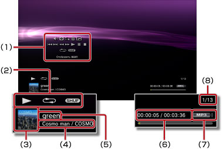

Музыка > Панель управления
Панель управления
Выполнение различных операций с помощью панели управления, отображаемой на экране. Панель управления отображается и скрывается при нажатии кнопки  .
.
Контроль громкости

Регулировка уровня громкости материалов, воспроизводимых в категории  (Музыка). Можно выбрать один из девяти уровней.
(Музыка). Можно выбрать один из девяти уровней.
Подсказка
При слишком высоком уровне громкости воспроизведение может быть прерывистым. В таком случае уменьшите уровень громкости.
Визуалайзер
Выбор одного или нескольких вариантов фона, которые будут отображаться во время воспроизведения контента.
Подсказка
Фон визуалайзера нельзя изменить, когда отображается контент категории  (Фото) или
(Фото) или  (Веб-браузер).
(Веб-браузер).
Добавить в список воспроизведения
Добавление воспроизводящегося содержимого в список воспроизведения.
Подсказка
Только сохраненные на жестком диске музыкальные файлы могут быть добавлены в список воспроизведения.
Удалить
Удаление воспроизводящегося содержимого из списка воспроизведения.
Подсказка
Могут быть удалены только хранящиеся на жестком диске музыкальные файлы.
Отобразить
Просмотр состояния и другой информации во время воспроизведения. Элементы информации зависят от воспроизводимого контента.

(1) |
Панели управления |
|---|---|
(2) |
Значок состояния |
(3) |
Значок дорожки |
(4) |
Имя артиста/имя альбома |
(5) |
Имя дорожки |
(6) |
Время, прошедшее с начала воспроизведения дорожки/общее время |
(7) |
Кодек |
(8) |
Номер дорожки/общее количество дорожек |
Назад
Возврат к началу текущей или предыдущей дорожки.
Далее
Переход к началу следующей дорожки.
Быстро (перемотка назад)/Быстро (перемотка вперед)
Быстрая перемотка воспроизводимого контента вперед или назад. При нажатии и удерживании кнопки  контент будет перематываться вперед или назад пока нажата кнопка.
контент будет перематываться вперед или назад пока нажата кнопка.
Воспроизведение
Запуск воспроизведения контента.
Пауза
Временная приостановка воспроизведения.
Стоп
Остановка воспроизведения.
Повтор
Повторное воспроизведение контента. Можно выбрать один из трех режимов повторения с помощью кнопки .
 |
Повторное воспроизведение одного элемента контента. |
|---|---|
|
Повторное воспроизведение всего контента. |
| Нет индикации | Сброс повторного воспроизведения с последующим воспроизведением всего контента по порядку. |
Случайный
Воспроизведение контента в случайном порядке.